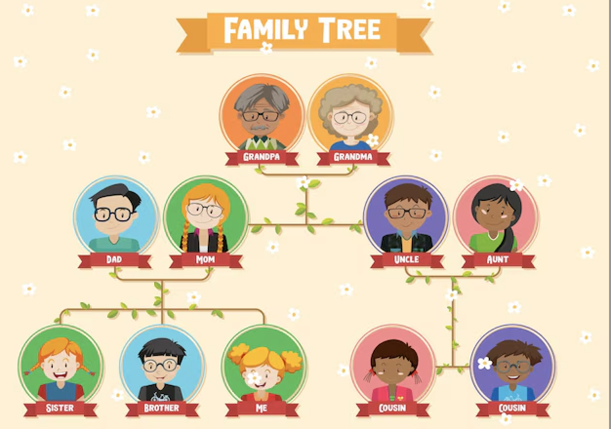
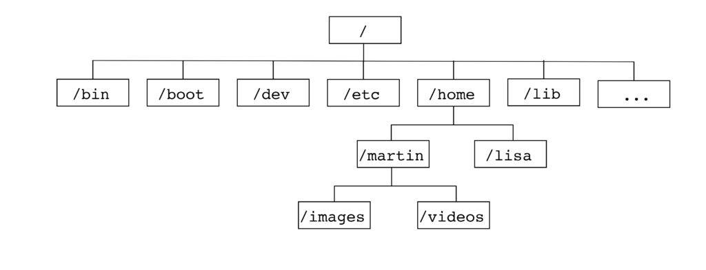
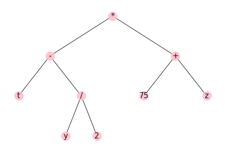
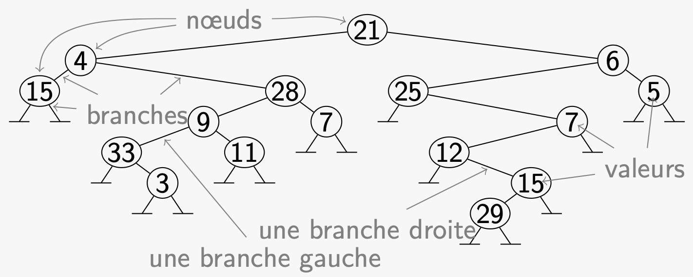
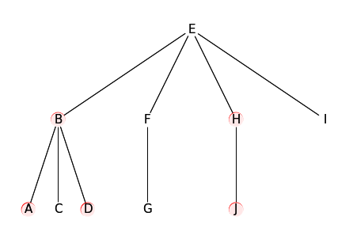
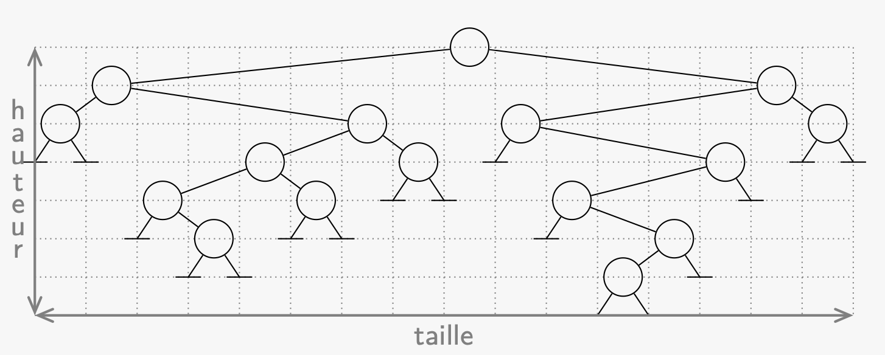
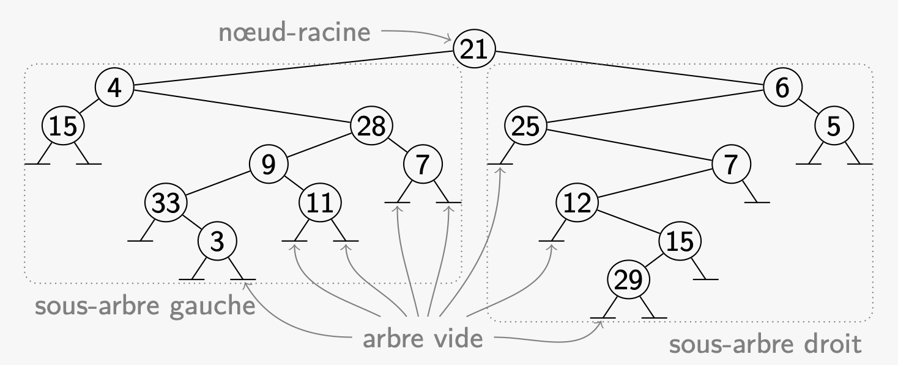
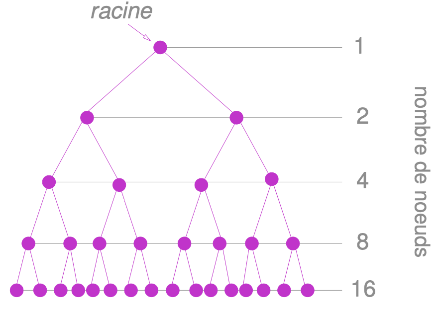
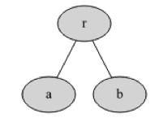
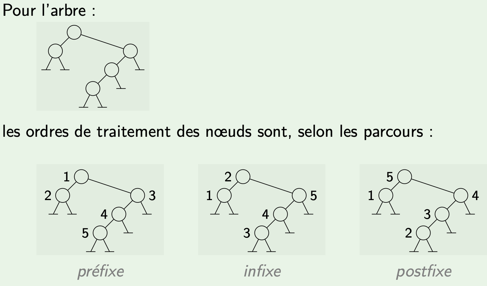

arbres
Ce cours comporte plusieurs pages:
- cours sur les graphes. Term NSI
- TP sur l’implementation en python des graphes
- Arbres
- TP sur la notion d’arbre couvrant
Arbres
Définitions
Un arbre est constitué de noeuds organisés de manière hierarchique: c’est un graphe non orienté, connexe, sans cycle, dans lequel on a choisi un noeud particulier appelé la racine.
Chaque noeud peut être étiqueté par une information.
Un arbre est donc un cas particulier des graphes. Voir la page suivante sur les graphes
On parle de descendants pour les noeuds fils.
Des exemples d’arbres:
- l’arbre généalogique est un bon exemple. Le vocabulaire sur la structure des arbres s’inspire d’ailleurs de la génélogie (père-fils).

family tree sur freepik.com/genealogie
Les noeuds sont …les couples.
- L’arbre représentant les sytèmes de dossiers sur ordinateur (dossiers et sous-dossiers puis fichiers)Ci-dessous l’arborescence de fichiers dans un raspberry-Pi:

arborescence linux
- arbre représentant des expressions arithmétiques

Retrouver l'expression arithmetique correspondante
Caractéristiques d’un arbre

exemple d'arbre binaire et vocabulaire
- Dans un arbre, chaque valeur est stockée dans un nœud. On appelle parfois cette valeur une clé.
- Les nœuds sont connectés par des arêtes, ou branches qui représentent une relation de type “parent (prédécesseur est le terme exact) – fils”.
- Chaque noeud ne possède qu’un seul noeud parent (sauf le noeud racine).
- La racine est le seul nœud qui n’a pas de prédécesseur.
- Les nœuds qui n’ont pas de fils sont appelés des feuilles.
- Des nœuds qui ont le même père sont appelés des frères.
- Un sous-arbre c’est une portion de l’arbre. C’est une notion utile pour la recursivité.
- Le niveau d’un nœud est la distance qui le sépare de la racine… Sachant que le niveau de la racine est 0 et que le niveau d’un nœud quelconque c’est 1+ le niveau de son père.
- La hauteur d’un arbre, ou sa profondeur est égale au niveau (à la profondeur) du noeud le plus profond. Selon la convention proposée ici (le niveau de la racine vaut 0), la hauteur correspond aussi au plus grand nombre de branches depuis la racine jusqu’à l’une de ses feuilles.
- Le degré d’un arbre est egal au plus grand des degrés de ses noeuds.
- Un arbre de degré égal à 1 est … une liste.

Quel est le degré de cet arbre?
- La taille d’un arbre est son nombre de noeuds.

dimensions d'un arbre
Arbres binaires
- Arbre binaire: arbre de degré égal à 2. Chaque noeud a au plus 2 fils: le fils droit et le fils gauche.
- Arbre binaire équilibré: pour chaque noeud interne, les sous-arbres gauche et droit ont une même hauteur (ou qui diffère d’une unité).
- Arbre binaire complet: tous les niveaux de l’arbre sont remplis.
La taille d’un arbre binaire peut alors se déduire de la formule, qui prend la profondeur p en paramètre:

definition recursive des arbres binaires

arbre complet
Implémenter en python
On utilisera l’arbre suivant pour l’implémentation en python:
exemple d'arbre binaire de taille 9
Liste
Un noeud peut être représenté par une liste imbriquée [clé,fils gauche,fils droit].
Et comme les fils gauche ou fils droit sont des noeuds, on y mettra une nouvelle liste imbriquée [clé,fils gauche,fils droit].
Pour les feuilles, la liste s’écrit: [clé,None,None].
Le petit arbre suivant peut être représenté par ['r',[‘a’,None,None],[‘b’,None,None]]`

petit arbre de taille 3
arbre9 = [3,[...,..,..],[...,..,..]]
Question: compléter cette liste.
Classe
La classe suivante va permettre d’implémenter les arbres binaires:
On n’a donné ici que le constructeur, mais il est possible d’y ajouter les méthodes qui permettront de retourner une valeur (getter), ou d’ajouter un noeud (setter); ou encore de déterminer les dimensions de l’arbre.
Avec l’arbre de taille 9 vu plus haut, la classe peut s’utiliser de la manière suivante (avec la notation pointée qui n’est pas recommandée):
Ou bien, en supposant que vous ayez ajouté deux méthodes de classe ajoute_fils_gauche et ajoute_fils_droit:
Parcours
Definition: Un parcours est un algorithme qui appelle une fonction, ou un méthode sur tous les noeuds d’un arbre.
L’ordre sur les noeuds dans lequel la méthode est appelée doit être fixé. Il y a plusieurs choix, qui diffèrent par la seule position de l’instruction Afficher clef [ r ]
L’algorithme opère alors un traitement sur chacune des clés de l’arbre, dans un ordre choisi. Ici, on cherche à Afficher la clef.
Mais on peut remplacer cette instruction par un traitement sur les valeurs: ajouter 1 pour compter les clés par exemple.
Parcours postfixe
Parcours préfixe
Parcours infixe

exemples de parcours
Parcours en largeur
Les trois algorithmes vus plus haut s’apparent à une exploration de type parcours en profondeur. C’est la position de l’instruction de traitement qui amène les différences entre ces 3 parcours.
Un arbre est un graphe. On peut donc lui appliquer l’algorithme de parcours en largeur vu dans une leçon précédente.
Rappel:
t
Travaux pratiques
Sur Capytale
Sur Google Colab
- telecharger le fichier module hierarchyP (faire un clic droit et enregistrer sous…)
- utiliser le lien suivant pour acceder au notebook colab
Notebook avec un IDE local
- lien alternatif: télécharger une version locale du notebook (clic droit et enregistrer sous…)
- correction du notebook colab en ligne
Liens
- cours de l’Université Paris Sud: Lien